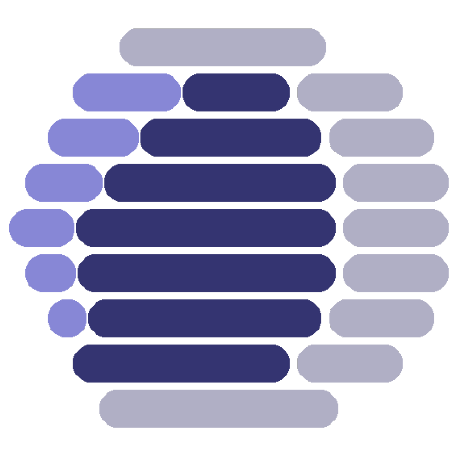

Compunaut Fleet Controller
MISSION CONTROL
{%- for minion, short_host in salt['mine.get']('compunaut_octoprint:enabled:True', 'get_minion_short_host', 'pillar').iteritems()|sort %}
{{ short_host }}
{%- endfor %}